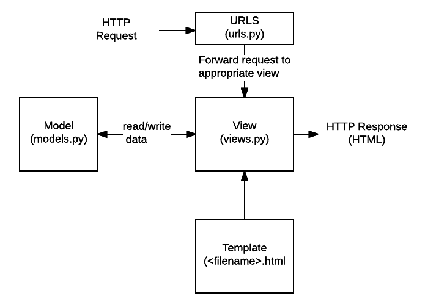
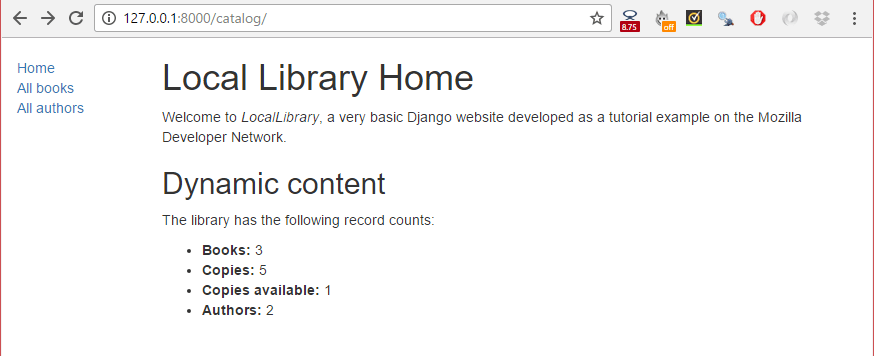

We're now ready to add the code that displays our first complete page — a home page for the LocalLibrary website. The home page will show the number of records we have for each model type and provide sidebar navigation links to our other pages. Along the way we'll gain practical experience in writing basic URL maps and views, getting records from the database, and using templates.
| Prerequisites: | Read the Django Introduction. Complete previous tutorial topics (including Django Tutorial Part 4: Django admin site). |
|---|---|
| Objective: | Learn to create simple url maps and views (where no data is encoded in the URL), get data from models, and create templates. |
After we defined our models and created some initial library records to work with, it's time to write the code that presents that information to users. The first thing we need to do is determine what information we want to display in our pages, and define the URLs to use for returning those resources. Then we'll create a URL mapper, views, and templates to display the pages.
The following diagram describes the main data flow, and the components required when handling HTTP requests and responses. As we already implemented the model, the main components we'll create are:

As you'll see in the next section, we have 5 pages to display, which is too much information to document in a single article. Therefore, this article will focus on how to implement the home page, and we'll cover the other pages in a subsequent article. This should give you a good end-to-end understanding of how URL mappers, views, and models work in practice.
As this version of LocalLibrary is essentially read-only for end users, we just need to provide a landing page for the site (a home page), and pages that display list and detail views for books and authors.
The URLs that we'll need for our pages are:
catalog/ — The home (index) page.catalog/books/ — A list of all books.catalog/authors/ — A list of all authors.catalog/book/<id> — The detail view for a particular book, with a field primary key of <id> (the default). For example, the URL for the third book added to the list will be /catalog/book/3.catalog/author/<id> — The detail view for the specific author with a primary key field of <id>. For example, the URL for the 11th author added to the list will be /catalog/author/11.The first three URLs will return the index page, books list, and authors list. These URLs do not encode any additional information, and the queries that fetch data from the database will always be the same. However, the results that the queries return will depend on the contents of the database.
By contrast the final two URLs will display detailed information about a specific book or author. These URLs encode the identity of the item to display (represented by <id> above). The URL mapper will extract the encoded information and pass it to the view, and the view will dynamically determine what information to get from the database. By encoding the information in the URL we will use a single set of a url mapping, a view, and a template to handle all books (or authors).
With Django, you can construct your URLs however you require — you can encode information in the body of the URL as shown above, or include GET parameters in the URL, for example /book/?id=6. Whichever approach you use, the URLs should be kept clean, logical, and readable, as recommended by the W3C.
The Django documentation recommends encoding information in the body of the URL to achieve better URL design.
As mentioned in the overview, the rest of this article describes how to construct the index page.
The first page we'll create is the index page (catalog/). The index page will include some static HTML, along with generated "counts" of different records in the database. To make this work we'll create a URL mapping, a view, and a template.
It's worth paying a little extra attention in this section. Most of the information also applies to the other pages we'll create.
When we created the skeleton website, we updated the locallibrary/urls.py file to ensure that whenever a URL that starts with catalog/ is received, the URLConf module catalog.urls will process the remaining substring.
The following code snippet from locallibrary/urls.py includes the catalog.urls module:
urlpatterns += [
path('catalog/', include('catalog.urls')),
]
Whenever Django encounters the import function django.urls.include(), it splits the URL string at the designated end character and sends the remaining substring to the included URLconf module for further processing.
We also created a placeholder file for the URLConf module, named /catalog/urls.py. Add the following lines to that file:
urlpatterns = [
path('', views.index, name='index'),
]
The path() function defines the following:
''. We'll discuss URL patterns in detail when working on the other views.views.index, which is the function named index() in the views.py file. The path() function also specifies a name parameter, which is a unique identifier for this particular URL mapping. You can use the name to "reverse" the mapper, i.e. to dynamically create a URL that points to the resource that the mapper is designed to handle. For example, we can use the name parameter to link to our home page from any other page by adding the following link in a template:
<a href="{% url 'index' %}">Home</a>.
We can hard code the link as in <a href="/catalog/">Home</a>), but if we change the pattern for our home page, for example, to /catalog/index) the templates will no longer link correctly. Using a reversed url mapping is more robust.
A view is a function that processes an HTTP request, fetches the required data from the database, renders the data in an HTML page using an HTML template, and then returns the generated HTML in an HTTP response to display the page to the user. The index view follows this model — it fetches information about the number of Book, BookInstance, available BookInstance and Author records that we have in the database, and passes that information to a template for display.
Open catalog/views.py and note that the file already imports the render() shortcut function to generate an HTML file using a template and data:
from django.shortcuts import render # Create your views here.
Paste the following lines at the bottom of the file:
from catalog.models import Book, Author, BookInstance, Genre
def index(request):
"""View function for home page of site."""
# Generate counts of some of the main objects
num_books = Book.objects.all().count()
num_instances = BookInstance.objects.all().count()
# Available books (status = 'a')
num_instances_available = BookInstance.objects.filter(status__exact='a').count()
# The 'all()' is implied by default.
num_authors = Author.objects.count()
context = {
'num_books': num_books,
'num_instances': num_instances,
'num_instances_available': num_instances_available,
'num_authors': num_authors,
}
# Render the HTML template index.html with the data in the context variable
return render(request, 'index.html', context=context)
The first line imports the model classes that we'll use to access data in all our views.
The first part of the view function fetches the number of records using the objects.all() attribute on the model classes. It also gets a list of BookInstance objects that have a value of 'a' (Available) in the status field. You can find more information about how to access model data in our previous tutorial Django Tutorial Part 3: Using models > Searching for records.
At the end of the view function we call the render() function to create an HTML page and return the page as a response. This shortcut function wraps a number of other functions to simplify a very common use case. The render() function accepts the following parameters:
request object, which is an HttpRequest.context variable, which is a Python dictionary, containing the data to insert into the placeholders. We'll talk more about templates and the context variable in the next section. Let's get to creating our template so we can actually display something to the user!
A template is a text file that defines the structure or layout of a file (such as an HTML page), it uses placeholders to represent actual content.
A Django application created using startapp (like the skeleton of this example) will look for templates in a subdirectory named 'templates' of your applications. For example, in the index view that we just added, the render() function will expect to find the file index.html in /locallibrary/catalog/templates/ and will raise an error if the file is not present.
You can check this by saving the previous changes and accessing 127.0.0.1:8000 in your browser - it will display a fairly intuitive error message: "TemplateDoesNotExist at /catalog/", and other details.
Based on your project's settings file, Django will look for templates in a number of places, searching in your installed applications by default. You can find out more about how Django finds templates and what template formats it supports in the Templates section of the Django documentation.
The index template will need standard HTML markup for the head and body, along with navigation sections to link to the other pages of the site (which we haven't created yet), and to sections that display introductory text and book data.
Much of the HTML and navigation structure will be the same in every page of our site. Instead of duplicating boilerplate code on every page, you can use the Django templating language to declare a base template, and then extend it to replace just the bits that are different for each specific page.
The following code snippet is a sample base template from a base_generic.html file. We'll be creating the template for LocalLibrary shortly. The sample below includes common HTML with sections for a title, a sidebar, and main contents marked with the named block and endblock template tags, shown in bold. You can leave the blocks empty, or include default content to use when rendering pages derived from the template.
Template tags are functions that you can use in a template to loop through lists, perform conditional operations based on the value of a variable, and so on. In addition to template tags, the template syntax allows you to reference variables that are passed into the template from the view, and use template filters to format variables (for example, to convert a string to lower case).
<!DOCTYPE html>
<html lang="en">
<head>
{% block title %}<title>Local Library</title>{% endblock %}
</head>
<body>
{% block sidebar %}<!-- insert default navigation text for every page -->{% endblock %}
{% block content %}<!-- default content text (typically empty) -->{% endblock %}
</body>
</html>
When defining a template for a particular view, we first specify the base template using the extends template tag — see the code sample below. Then we declare what sections from the template we want to replace (if any), using block/endblock sections as in the base template.
For example, the code snippet below shows how to use the extends template tag and override the content block. The generated HTML will include the code and structure defined in the base template, including the default content you defined in the title block, but the new content block in place of the default one.
{% extends "base_generic.html" %}
{% block content %}
<h1>Local Library Home</h1>
<p>Welcome to LocalLibrary, a website developed by <em>Mozilla Developer Network</em>!</p>
{% endblock %}
We will use the following code snippet as the base template for the LocalLibrary website. As you can see, it contains some HTML code and defines blocks for title, sidebar, and content. We have a default title and a default sidebar with links to lists of all books and authors, both enclosed in blocks to be easily changed in the future.
We also introduce two additional template tags: url and load static. These tags will be explained in following sections.
Create a new file base_generic.html in /locallibrary/catalog/templates/ and paste the following code to the file:
<!DOCTYPE html>
<html lang="en">
<head>
{% block title %}<title>Local Library</title>{% endblock %}
<meta charset="utf-8">
<meta name="viewport" content="width=device-width, initial-scale=1">
<link rel="stylesheet" href="https://cdn.jsdelivr.net/npm/bootstrap@4.5.3/dist/css/bootstrap.min.css" integrity="sha384-TX8t27EcRE3e/ihU7zmQxVncDAy5uIKz4rEkgIXeMed4M0jlfIDPvg6uqKI2xXr2" crossorigin="anonymous">
<!-- Add additional CSS in static file -->
{% load static %}
<link rel="stylesheet" href="{% static 'css/styles.css' %}">
</head>
<body>
<div class="container-fluid">
<div class="row">
<div class="col-sm-2">
{% block sidebar %}
<ul class="sidebar-nav">
<li><a href="{% url 'index' %}">Home</a></li>
<li><a href="">All books</a></li>
<li><a href="">All authors</a></li>
</ul>
{% endblock %}
</div>
<div class="col-sm-10 ">{% block content %}{% endblock %}</div>
</div>
</div>
</body>
</html>
The template includes CSS from Bootstrap to improve the layout and presentation of the HTML page. Using Bootstrap (or another client-side web framework) is a quick way to create an attractive page that displays well on different screen sizes.
The base template also references a local css file (styles.css) that provides additional styling. Create a styles.css file in /locallibrary/catalog/static/css/ and paste the following code in the file:
.sidebar-nav {
margin-top: 20px;
padding: 0;
list-style: none;
}
Create a new HTML file index.html in /locallibrary/catalog/templates/ and paste the following code in the file. This code extends our base template on the first line, and then replaces the default content block for the template.
{% extends "base_generic.html" %}
{% block content %}
<h1>Local Library Home</h1>
<p>Welcome to LocalLibrary, a website developed by <em>Mozilla Developer Network</em>!</p>
<h2>Dynamic content</h2>
<p>The library has the following record counts:</p>
<ul>
<li><strong>Books:</strong> \{{ num_books }}</li>
<li><strong>Copies:</strong> \{{ num_instances }}</li>
<li><strong>Copies available:</strong> \{{ num_instances_available }}</li>
<li><strong>Authors:</strong> \{{ num_authors }}</li>
</ul>
{% endblock %}
In the Dynamic content section we declare placeholders (template variables) for the information from the view that we want to include. The variables are enclosed with double brace (handlebars), as shown in bold in the code sample.
You can easily recognize template variables and template tags (functions) - variables are enclosed in double braces (\{{ num_books }}), and tags are enclosed in single braces with percentage signs ({% extends "base_generic.html" %}).
The important thing to note here is that variables are named with the keys that we pass into the context dictionary in the render() function of our view (see sample below). Variables will be replaced with their associated values when the template is rendered.
context = {
'num_books': num_books,
'num_instances': num_instances,
'num_instances_available': num_instances_available,
'num_authors': num_authors,
}
return render(request, 'index.html', context=context)
Your project is likely to use static resources, including JavaScript, CSS, and images. Because the location of these files might not be known (or might change), Django allows you to specify the location in your templates relative to the STATIC_URL global setting. The default skeleton website sets the value of STATIC_URL to '/static/', but you might choose to host these on a content delivery network or elsewhere.
Within the template you first call the load template tag specifying "static" to add the template library, as shown in the code sample below. You can then use the static template tag and specify the relative URL to the required file.
<!-- Add additional CSS in static file -->
{% load static %}
<link rel="stylesheet" href="{% static 'css/styles.css' %}">
You can add an image into the page in a similar way, for example:
{% load static %}
<img src="{% static 'catalog/images/local_library_model_uml.png' %}" alt="UML diagram" style="width:555px;height:540px;">
The samples above specify where the files are located, but Django does not serve them by default. We configured the development web server to serve files by modifying the global URL mapper (/locallibrary/locallibrary/urls.py) when we created the website skeleton, but still need to enable file serving in production. We'll look at this later.
For more information on working with static files see Managing static files in the Django documentation.
The base template above introduced the url template tag.
<li><a href="{% url 'index' %}">Home</a></li>
This tag accepts the name of a path() function called in your urls.py and the values for any arguments that the associated view will receive from that function, and returns a URL that you can use to link to the resource.
The location where Django searches for templates is specified in the TEMPLATES object in the settings.py file. The default settings.py (as created for this tutorial) looks something like this:
TEMPLATES = [
{
'BACKEND': 'django.template.backends.django.DjangoTemplates',
'DIRS': [],
'APP_DIRS': True,
'OPTIONS': {
'context_processors': [
'django.template.context_processors.debug',
'django.template.context_processors.request',
'django.contrib.auth.context_processors.auth',
'django.contrib.messages.context_processors.messages',
],
},
},
]
The setting of 'APP_DIRS': True, is the most important, as it tells Django to search for templates in a subdirectory of each application in the project, named "templates" (this makes it easier to group templates with their associated application for easy re-use).
We can also specify specific locations for Django to search for directories using 'DIRS': [] (but that isn't needed yet).
You can find out more about how Django finds templates and what template formats it supports in the Templates section of the Django documentation.
At this point we have created all required resources to display the index page. Run the server (python3 manage.py runserver) and open http://127.0.0.1:8000/ in your browser. If everything is configured correctly, your site should look like the following screenshot.

The All books and All authors links will not work yet because the paths, views, and templates for those pages are not defined. We just inserted placeholders for those links in the base_generic.html template.
Here are a couple of tasks to test your familiarity with model queries, views, and templates.
title block. Override this block in the index template and create a new title for the page.
The section Extending templates explains how to create blocks and extend a block in another template.
context. You accomplish this in a similar way to creating and using num_books and num_instances_available. Then update the index template to include these variables.We just created the home page for our site — an HTML page that displays a number of records from the database and links to other yet-to-be-created pages. Along the way we learned fundamental information about url mappers, views, querying the database with models, passing information to a template from a view, and creating and extending templates.
In the next article we'll build upon this knowledge to create the remaining four pages of our website.
{{PreviousMenuNext("Learn/Server-side/Django/Admin_site", "Learn/Server-side/Django/Generic_views", "Learn/Server-side/Django")}}